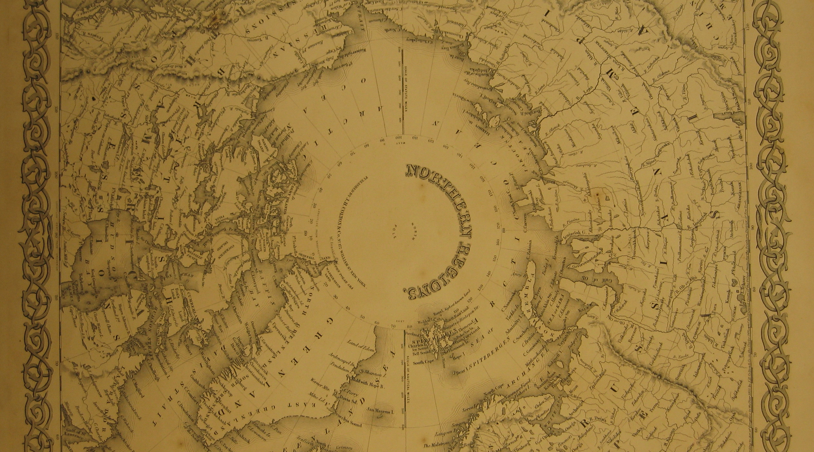

Kuzey Buz Denizi
Bir okyanus büyüklüğünde olan Kuzey Buz Denizi yaşam için dünyanın en çetin
koşullarına sahip olan bölgelerden biridir. Bu devasa deniz her kış donup her
yaz çözülür. Donan denizin azami boyutları her sene Amerikan Uzay
Araştırmalar Merkezi (NASA) tarafından uydudan ölçülüyor. 2015 yılında
ölçülen azami boyut buz kütlesinin tarihte görülen en küçük seviyesidir.